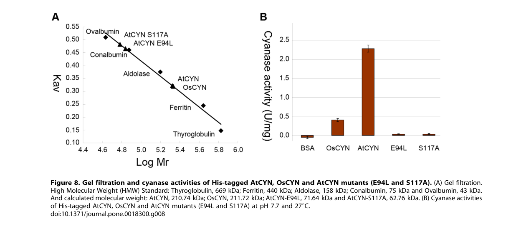

Cyanate hydratase (cyanase; EC 4.2.1.104) that catalyzes the bicarbonate-dependent catabolism of cyanate to ammonia and carbon dioxide. Function is assigned by HAMAP rule and by strong cyanase-family conservation; experimentally characterized plant orthologs in Arabidopsis (AtCYN) and rice (OsCYN) confirm bicarbonate-dependent cyanate decomposition, a homodecameric quaternary structure, and a physiological role in cyanate detoxification. No Populus-specific primary biochemical, mutant, or localization study has been reported, so organism-specific claims rest on family-based inference.
| GO Term | Evidence | Action | Reason |
|---|---|---|---|
|
GO:0003677
DNA binding
|
IEA
GO_REF:0000002 |
MARK AS OVER ANNOTATED |
Summary: DNA binding is an InterPro fold over-annotation for cyanate hydratase, not a catalytic or biological function of the enzyme.
Reason: The UniProt function and catalytic activity support cyanate hydratase activity only. This IEA row derives from the lambda-repressor-like DNA-binding fold (IPR010982) that the cyanase N-terminal domain shares structurally; the falcon deep-research synthesis of plant cyanases reports the enzyme as a cyanate-detoxifying lyase and provides no evidence for DNA binding as a function.
Supporting Evidence:
file:POPTR/CYN/CYN-uniprot.txt
DR GO; GO:0003677; F:DNA binding; IEA:InterPro.
file:POPTR/CYN/CYN-deep-research-falcon.md
annotated as **cyanate hydratase (cyanase), EC 4.2.1.104**, a member of the **cyanase family** (PF02560)
|
|
GO:0008824
cyanate hydratase activity
|
IEA
GO_REF:0000120 |
ACCEPT |
Summary: Cyanate hydratase activity is the core molecular function, strongly supported by family conservation and experimental enzymology of plant orthologs.
Reason: UniProt assigns the cyanate hydratase catalytic reaction and EC 4.2.1.104 by HAMAP rule. Falcon deep research independently confirms that plant cyanases catalyze bicarbonate-dependent cyanate decomposition to ammonia and CO2, consistent with the EC 4.2.1.104 assignment, based on direct enzymology in Arabidopsis and rice orthologs.
Supporting Evidence:
file:POPTR/CYN/CYN-uniprot.txt
Catalyzes the reaction of cyanate with bicarbonate to produce
file:POPTR/CYN/CYN-uniprot.txt
EC=4.2.1.104
file:POPTR/CYN/CYN-deep-research-falcon.md
Cyanase catalyzes **bicarbonate-dependent cyanate decomposition** to **NH3/NH4+ and CO2**
file:POPTR/CYN/CYN-deep-research-falcon.md
consistent with EC **4.2.1.104** assignment
|
|
GO:0009440
cyanate catabolic process
|
IEA
GO_REF:0000120 |
ACCEPT |
Summary: Cyanate catabolic process is the direct biological process for CYN; the enzyme breaks down cyanate, and plant genetic evidence ties cyanase to cyanate detoxification.
Reason: The enzyme converts cyanate plus bicarbonate to ammonia and CO2. Falcon deep research reports that the best-supported plant role is cyanate detoxification with a potential contribution to nitrogen recycling, and that an Arabidopsis cyanase knockout fails to germinate under cyanate stress, directly linking the gene to cyanate catabolism in vivo.
Supporting Evidence:
file:POPTR/CYN/CYN-uniprot.txt
Reaction=cyanate + hydrogencarbonate + 3 H(+) = NH4(+) + 2 CO2;
file:POPTR/CYN/CYN-deep-research-falcon.md
Best-supported plant role is **cyanate detoxification** with potential contribution to **nitrogen recycling/assimilation** by releasing ammonium
file:POPTR/CYN/CYN-deep-research-falcon.md
cyn-7 knockout** failed to germinate at **1–2 mM KCNO**
|
Q: Under what physiological or stress conditions is Populus cyanase active in cyanate detoxification or nitrogen recycling, and does it mirror the floral-enriched, salt-responsive expression observed for the Arabidopsis ortholog?
Experiment: Express recombinant Populus CYN and measure bicarbonate-dependent cyanate decomposition kinetics (Km for cyanate and bicarbonate) to confirm the EC 4.2.1.104 activity in this species.
Type: targeted functional assay
Experiment: Determine the subcellular localization of Populus CYN (e.g., GFP fusion or organelle proteomics), which remains an explicit knowledge gap, and assess cyanate tolerance in CYN perturbation lines.
Type: localization and phenotypic assay
The research report should be a detailed narrative explaining the function, biological processes, and localization of the gene product. Citations should be given for all claims.
You should prioritize authoritative reviews and primary scientific literature when conducting research. You can supplement
this with annotations you find in gene/protein databases, but these can be outdated or inaccurate.
We are specifically interested in the primary function of the gene - for enzymes, what reaction is catalyzed, and what is the substrate specificity? For transporters, what is the substrate? For structural proteins or adapters, what is the broader structural role? For signaling molecules, what is the role in the pathway.
We are interested in where in or outside the cell the gene product carries out its function.
We are also interested in the signaling or biochemical pathways in which the gene functions. We are less interested in broad pleiotropic effects, except where these elucidate the precise role.
Include evidence where possible. We are interested in both experimental evidence as well as inference from structure, evolution, or bioinformatic analysis. Precise studies should be prioritized over high-throughput, where available.
The research target specified (UniProt B9HSR7) is annotated as cyanate hydratase (cyanase), EC 4.2.1.104, a member of the cyanase family (PF02560), in Populus trichocarpa (western balsam poplar). This identity is consistent with experimentally validated plant cyanases (Arabidopsis and rice) that are small cyanase-family enzymes with conserved catalytic residues and a characteristic homodecameric assembly. However, within the literature retrieved in this run, no Populus-specific primary study (biochemistry, mutants, localization, or expression profiling) was found for B9HSR7/POPTRDRAFT_833411. Therefore, the highest-confidence functional statements for Populus CYN are grounded in (i) cyanase-family conservation and (ii) direct experimental evidence from other plants (Arabidopsis/rice), explicitly flagged as inference rather than Populus-specific demonstration. (qian2011biochemicalandstructural pages 1-2, qian2011biochemicalandstructural pages 2-4)
| Claim category | Populus trichocarpa specific? (Y/N) | Best supporting source(s) with year/URL | Key details/quantitative data |
|---|---|---|---|
| Identity/domains | Y | UniProt B9HSR7 (user-provided target); plant cyanase family evidence from Qian et al., 2011, https://doi.org/10.1371/journal.pone.0018300 (qian2011biochemicalandstructural pages 1-2, qian2011biochemicalandstructural pages 2-4) | Target is Populus trichocarpa CYN / cyanate hydratase (cyanase; EC 4.2.1.104), assigned to the cyanase family. Plant cyanases characterized experimentally in Arabidopsis/rice are small proteins of 168 aa and conserve the canonical cyanase catalytic motif architecture, supporting family-based annotation of B9HSR7 (qian2011biochemicalandstructural pages 1-2, qian2011biochemicalandstructural pages 2-4). |
| Reaction | N | Qian et al., 2011, https://doi.org/10.1371/journal.pone.0018300; Ranjan et al., 2021, https://doi.org/10.1038/s41598-020-79489-3 (qian2011biochemicalandstructural pages 1-2, ranjan2021crystalstructureof pages 1-2) | Cyanase catalyzes bicarbonate-dependent cyanate decomposition to NH3/NH4+ and CO2. This is the primary functional annotation most strongly supported for plant CYN homologs and is consistent with EC 4.2.1.104 assignment (qian2011biochemicalandstructural pages 1-2, ranjan2021crystalstructureof pages 1-2). |
| Substrate/cofactor | N | Qian et al., 2011, https://doi.org/10.1371/journal.pone.0018300 (qian2011biochemicalandstructural pages 6-7, qian2011biochemicalandstructural pages 7-8) | Required substrate/cofactor system is cyanate + bicarbonate. Reported Km(NaHCO3) values: 0.79 mM (AtCYN) and 0.63 mM (OsCYN). Reported Km(KCNO) values differ markedly: about 0.94 mM (AtCYN) vs 7.38 mM (OsCYN), indicating different cyanate affinities despite similar bicarbonate dependence (qian2011biochemicalandstructural pages 6-7, qian2011biochemicalandstructural pages 7-8). |
| Oligomerization | N | Qian et al., 2011, https://doi.org/10.1371/journal.pone.0018300; figure evidence (qian2011biochemicalandstructural media 679c544d, qian2011biochemicalandstructural media c2a17a22, qian2011biochemicalandstructural media faf6fd18) | Plant cyanases AtCYN and OsCYN form homodecamers. Gel filtration gave apparent native masses of about 210.7 kDa (AtCYN) and 211.7 kDa (OsCYN), consistent with a decameric enzyme; this mirrors known cyanase family architecture (qian2011biochemicalandstructural pages 1-2, qian2011biochemicalandstructural pages 7-8, qian2011biochemicalandstructural media 679c544d). |
| Key residues | N | Qian et al., 2011, https://doi.org/10.1371/journal.pone.0018300 (qian2011biochemicalandstructural pages 1-2, qian2011biochemicalandstructural pages 2-4, qian2011biochemicalandstructural pages 6-7) | Conserved catalytic residues in plant cyanases correspond to Arg96, Glu99, Ser122 in the Arabidopsis/rice alignment. Mutational data also implicate Glu94 and Ser117 in stability/decamer formation; E94L and S117A mutants lost activity and shifted to smaller/non-decameric assemblies (71.64 kDa and 62.76 kDa apparent MW) (qian2011biochemicalandstructural pages 6-7, qian2011biochemicalandstructural pages 1-2, qian2011biochemicalandstructural pages 2-4). |
| Physiological role | N | Qian et al., 2011, https://doi.org/10.1371/journal.pone.0018300; Martinez & Diaz, 2024, https://doi.org/10.3390/plants13091239 (qian2011biochemicalandstructural pages 1-2, qian2011biochemicalandstructural pages 2-4, martinez2024plantcyanogenicderivedmetabolites pages 9-10) | Best-supported plant role is cyanate detoxification with potential contribution to nitrogen recycling/assimilation by releasing ammonium. In Arabidopsis, KCNO inhibited germination and early seedling growth; cyn-7 knockout failed to germinate at 1–2 mM KCNO, whereas lines expressing AtCYN or OsCYN were more resistant (qian2011biochemicalandstructural pages 1-2, qian2011biochemicalandstructural pages 2-4). Recent review context also notes cyanase can detoxify endogenous/exogenous cyanate and links cyanate production to carbamoyl phosphate breakdown and broader nitrogen metabolism (martinez2024plantcyanogenicderivedmetabolites pages 9-10). |
| Expression/stress regulation | N | Qian et al., 2011, https://doi.org/10.1371/journal.pone.0018300 (qian2011biochemicalandstructural pages 6-7, qian2011biochemicalandstructural pages 1-2, qian2011biochemicalandstructural pages 7-8) | AtCYN transcript is highest in flowers (~3-fold above seedling/root/stem; leaves about half seedling level). Under KCNO or NaCl, transcript levels initially decrease during the first 12 h then increase; continuous salt stress induces AtCYN, whereas continuous KCNO does not significantly induce it. A promoter ethylene-responsive element (ATTTAAAA) was noted, suggesting regulatory coupling to stress/ethylene-related metabolism (qian2011biochemicalandstructural pages 6-7, qian2011biochemicalandstructural pages 7-8). |
| Localization | N | No direct Populus localization paper retrieved; Qian et al., 2011 did not report subcellular localization (qian2011biochemicalandstructural pages 6-7, qian2011biochemicalandstructural pages 1-2) | Direct subcellular localization evidence was not retrieved for Populus CYN or for the Arabidopsis/rice experimental study used here. Therefore localization for B9HSR7 should be considered unresolved from the retrieved primary literature rather than inferred confidently (qian2011biochemicalandstructural pages 6-7, qian2011biochemicalandstructural pages 1-2). |
| Notes/limitations | Y | Populus-specific literature searches in this run found no direct primary study; inference anchored to UniProt B9HSR7 plus plant cyanase experiments/reviews (qian2011biochemicalandstructural pages 6-7, qian2011biochemicalandstructural pages 1-2, ranjan2021crystalstructureof pages 1-2, martinez2024plantcyanogenicderivedmetabolites pages 9-10) | The gene symbol CYN is taxonomically broad/ambiguous, so annotation must stay anchored to UniProt B9HSR7, Populus trichocarpa. No direct Populus biochemical, mutant, or localization study was retrieved here; thus most functional claims for B9HSR7 are high-confidence family-based inference from experimentally characterized plant cyanases (Arabidopsis/rice) rather than organism-specific demonstration. |
Table: This table summarizes the strongest functional annotation evidence for Populus trichocarpa CYN (UniProt B9HSR7), separating direct Populus-specific facts from inference based on experimentally characterized plant cyanases in Arabidopsis and rice. It is useful for distinguishing high-confidence enzymatic annotation from remaining evidence gaps such as localization and Populus-specific validation.
Cyanase (also called cyanate hydratase, cyanate hydrolase, or cyanate lyase) catalyzes a bicarbonate-dependent conversion of cyanate (OCN−/CNO−) into ammonia/ammonium and carbon dioxide. In the plant cyanase study used as primary evidence, the authors describe cyanase as catalyzing cyanate decomposition in a bicarbonate-dependent reaction producing CO2 and NH3. (qian2011biochemicalandstructural pages 1-2, ranjan2021crystalstructureof pages 1-2)
A widely used stoichiometric description (as summarized in a 2024 remediation-focused source) is:
CNO− + HCO3− + 2H+ → 2 CO2 + NH3. (sedova2024účinnábioremediacetoxického pages 37-41)
Cyanate is considered broadly toxic and cyanase-mediated conversion to ammonium/CO2 provides a plausible detoxification and potential nitrogen recycling/assimilation route. A plant primary study shows that exogenous potassium cyanate (KCNO) inhibits germination/early seedling growth, while cyanase expression confers resistance, supporting a detoxification role. (qian2011biochemicalandstructural pages 1-2, qian2011biochemicalandstructural pages 2-4)
A 2024 review further links cyanate metabolism to nitrogen biochemistry by noting that cyanate can arise from dissociation of carbamoyl phosphate, suggesting connections to arginine and pyrimidine metabolism through cyanate concentration control. (martinez2024plantcyanogenicderivedmetabolites pages 9-10)
Plant cyanases require cyanate and bicarbonate; kinetic measurements in Arabidopsis (AtCYN) and rice (OsCYN) explicitly quantify bicarbonate dependence:
- Km(NaHCO3): 0.79 mM (AtCYN) and 0.63 mM (OsCYN). (qian2011biochemicalandstructural pages 6-7)
Cyanate affinity differs markedly between the two plant enzymes:
- Km(KCNO): ~0.94 mM (AtCYN) vs ~7.38 mM (OsCYN). (qian2011biochemicalandstructural pages 7-8)
These data support a model where Populus B9HSR7 (a cyanase-family homolog) likely shares cyanate + bicarbonate substrate requirements, while kinetic constants may vary across plant lineages.
In the Arabidopsis/rice cyanase study, canonical catalytic residues annotated for bacterial cyanase (E. coli) are conserved in plant enzymes:
- Arg96, Glu99, Ser122 (numbering as reported in the plant study’s alignment context). (qian2011biochemicalandstructural pages 1-2, qian2011biochemicalandstructural pages 2-4)
Mutagenesis in Arabidopsis cyanase also showed that residues contribute to both catalysis and assembly stability:
- Mutants E94L and S117A lost activity and shifted to smaller apparent oligomers, implicating these residues in the stability of the active multimer. (qian2011biochemicalandstructural pages 6-7, qian2011biochemicalandstructural pages 7-8)
A mechanistic description from an authoritative biodegradation review describes cyanase as acting via bicarbonate as a nucleophile forming an unstable intermediate (carbamate), consistent with a two-step chemical logic for the overall conversion to CO2 and ammonia. (sharma2019areviewon pages 6-7)
Plant cyanases form homodecamers, consistent with cyanase-family architecture:
- Gel filtration estimates for native masses: ~210.7 kDa (AtCYN) and ~211.7 kDa (OsCYN). (qian2011biochemicalandstructural pages 7-8)
- Visual evidence (gel filtration/oligomerization and activity) was retrieved from the 2011 plant cyanase paper. (qian2011biochemicalandstructural media 679c544d)
The E94L and S117A Arabidopsis mutants showed substantially reduced apparent molecular weights (71.64 kDa and 62.76 kDa, respectively), aligning with disruption of decamer formation and loss of catalytic activity. (qian2011biochemicalandstructural pages 6-7, qian2011biochemicalandstructural pages 7-8)
A fungal cyanase structure paper reinforces that cyanases commonly assemble into higher-order oligomers (for the thermophilic fungal enzyme, a decamer formed by a pentamer of dimers) and reiterates bicarbonate-dependent catalysis to ammonium and CO2. (ranjan2021crystalstructureof pages 1-2)
A primary plant study provides direct genetic and physiological evidence that cyanase contributes to cyanate tolerance:
- A cyanase knockout line (cyn-7) failed to germinate at 1–2 mM KCNO, while wild type was comparatively resistant; knock-down lines showed reduced germination/growth, linking the gene to cyanate handling in vivo. (qian2011biochemicalandstructural pages 2-4)
- Transgenic expression of AtCYN or OsCYN conferred resistance to cyanate stress (KCNO). (qian2011biochemicalandstructural pages 1-2)
A corresponding phenotype figure (KCNO stress) was retrieved as visual evidence. (qian2011biochemicalandstructural media faf6fd18)
The same study reports organ-biased expression and stress responses:
- AtCYN transcripts are highest in flowers (reported ~3-fold higher than seedling/root/stem), and lower in leaves (~half of seedling). (qian2011biochemicalandstructural pages 6-7)
- Under KCNO or NaCl treatments, AtCYN transcripts decreased over the first ~12 hours then increased; continuous salt stress induced AtCYN, whereas continuous KCNO did not significantly induce it. (qian2011biochemicalandstructural pages 6-7, qian2011biochemicalandstructural pages 7-8)
These observations support a view of cyanase as part of a broader stress response (including salinity-associated regulation) in at least Arabidopsis.
In the retrieved primary plant cyanase study, subcellular localization was not reported, and no Populus-specific localization paper was retrieved. Therefore, the cellular compartment in which Populus B9HSR7 functions cannot be assigned confidently from the available evidence in this run and remains an explicit knowledge gap for this specific target. (qian2011biochemicalandstructural pages 6-7, qian2011biochemicalandstructural pages 1-2)
A 2024 plant-focused review frames cyanogenesis as a defensive system producing HCN, and discusses detoxification mechanisms employed by herbivores (and by extension relevant to plants) including β-cyanoalanine synthases, rhodaneses, and cyanases. (martinez2024plantcyanogenicderivedmetabolites pages 1-2)
This review describes cyanase as catalyzing cyanate + bicarbonate → ammonium + CO2, and notes that cyanase-mediated cyanide detoxification requires prior oxidation of cyanide to cyanate (e.g., by cyanide monooxygenases) in organisms using that route. (martinez2024plantcyanogenicderivedmetabolites pages 9-10)
Cyanase can convert cyanate into ammonium, which can feed into nitrogen assimilation pathways. A key conceptual advance in nitrogen cycling literature is that cyanate can serve as a substrate in diverse organisms and can be transformed to ammonium by cyanase, enabling growth or cross-feeding in microbial communities; this broader framework supports interpreting plant cyanase as a detoxification and potential nitrogen-recovery enzyme when cyanate is available. (ranjan2021crystalstructureof pages 1-2)
Martinez & Diaz (Plants, April 2024) summarize cyanase as part of detoxification strategies in the plant–herbivore chemical ecology landscape, including the requirement for cyanate (often after cyanide oxidation) and the connection to carbamoyl phosphate-derived cyanate. The review highlights cyanase distribution across taxa and emphasizes horizontal gene transfer into some eukaryotes (e.g., herbivores), underscoring cyanase as a broadly deployable cyanate-detoxification module. URL: https://doi.org/10.3390/plants13091239 (martinez2024plantcyanogenicderivedmetabolites pages 9-10)
Sáez et al. (IJMS, April 2024) apply a phylogenomic/pangenomic approach within Pseudomonas to identify and contextualize genes involved in cyanide resistance and assimilation. They identify cynS as a key cyanate assimilation gene and use genome filtering steps (36→27→21 genomes; 18/21 = 85.7% meeting ANI >97% in one dataset) to refine comparative analyses, illustrating how modern genomics is used for bioprospecting cyanotrophy/cyanate metabolism functions. URL: https://doi.org/10.3390/ijms25084456 (saez2024genomicinsightsinto pages 2-3, saez2024genomicinsightsinto pages 1-2)
A well-defined implementation logic is to oxidize cyanide to cyanate (chemically) and then use cyanase-containing microbes/enzymes to convert cyanate to ammonium and CO2. In Pseudomonas pseudoalcaligenes CECT5344, cyanate assimilation depends on a cyanase encoded in the cyn gene cluster, and the study reports biodegradation of hazardous jewelry wastewater after chemical oxidation of cyanide to cyanate. (sharma2019areviewon pages 6-7)
A 2024 remediation-oriented source summarizes heterologous expression and immobilization strategies for cyanase, including cyanase from Thermomyces lanuginosus immobilized on modified magnetic multi-walled carbon nanotubes, with model tests including cyanate at 168 mg/L and heavy metals, illustrating the applied engineering direction for robust cyanate detoxification systems in complex matrices. (sedova2024účinnábioremediacetoxického pages 37-41)
Primary molecular function (high confidence): Populus CYN (B9HSR7) is best annotated as a cyanase (cyanate hydratase; EC 4.2.1.104) catalyzing bicarbonate-dependent decomposition of cyanate to NH3/NH4+ and CO2, based on strong cyanase-family conservation and direct enzymology in other plants. (qian2011biochemicalandstructural pages 1-2, ranjan2021crystalstructureof pages 1-2)
Substrate/cofactor requirements (high confidence): The enzyme requires cyanate and bicarbonate; plant enzyme kinetics quantify millimolar-range bicarbonate dependence and species-specific cyanate affinity differences, which should be anticipated for Populus orthologs/paralogs. (qian2011biochemicalandstructural pages 6-7, qian2011biochemicalandstructural pages 7-8)
Likely oligomerization (high confidence): Plant cyanases form homodecamers near ~211 kDa, and destabilization of decamer assembly abolishes activity, suggesting Populus CYN likely requires correct multimerization for function. (qian2011biochemicalandstructural pages 7-8, qian2011biochemicalandstructural media 679c544d)
Physiological role (moderate-to-high confidence in plants; indirect for Populus): Genetic evidence in Arabidopsis supports a role in cyanate detoxification and cyanate-stress tolerance. Extrapolating to Populus is plausible but remains inference without Populus-specific experiments. (qian2011biochemicalandstructural pages 2-4, qian2011biochemicalandstructural media faf6fd18)
Localization (unknown from retrieved evidence): Subcellular localization of Populus B9HSR7 remains unresolved in the retrieved literature set and should not be asserted without additional database/prediction or experimental data. (qian2011biochemicalandstructural pages 6-7, qian2011biochemicalandstructural pages 1-2)
Because Populus-specific primary literature for B9HSR7 was not retrieved here, the following remain open for Populus CYN and would be high priority for completing functional annotation:
- Subcellular localization (e.g., GFP fusion, organelle proteomics, or targeted predictions validated experimentally). (qian2011biochemicalandstructural pages 6-7, qian2011biochemicalandstructural pages 1-2)
- Expression context in Populus (tissue specificity, seasonal/stress regulation) to test whether Populus mirrors Arabidopsis floral enrichment and salt responsiveness. (qian2011biochemicalandstructural pages 6-7)
- Biochemical validation (recombinant enzyme kinetics, bicarbonate dependence) to confirm Populus-specific Km and pH/temperature optima. (qian2011biochemicalandstructural pages 7-8, qian2011biochemicalandstructural pages 2-4)
References
(qian2011biochemicalandstructural pages 1-2): D. Qian, Lin-lin Jiang, Lu Lu, Chunhong Wei, and Yi Li. Biochemical and structural properties of cyanases from arabidopsis thaliana and oryza sativa. PLoS ONE, 6:e18300, Mar 2011. URL: https://doi.org/10.1371/journal.pone.0018300, doi:10.1371/journal.pone.0018300. This article has 39 citations and is from a peer-reviewed journal.
(qian2011biochemicalandstructural pages 2-4): D. Qian, Lin-lin Jiang, Lu Lu, Chunhong Wei, and Yi Li. Biochemical and structural properties of cyanases from arabidopsis thaliana and oryza sativa. PLoS ONE, 6:e18300, Mar 2011. URL: https://doi.org/10.1371/journal.pone.0018300, doi:10.1371/journal.pone.0018300. This article has 39 citations and is from a peer-reviewed journal.
(ranjan2021crystalstructureof pages 1-2): Bibhuti Ranjan, Philip H. Choi, Santhosh Pillai, Kugenthiren Permaul, Liang Tong, and Suren Singh. Crystal structure of a thermophilic fungal cyanase and its implications on the catalytic mechanism for bioremediation. Scientific Reports, Jan 2021. URL: https://doi.org/10.1038/s41598-020-79489-3, doi:10.1038/s41598-020-79489-3. This article has 6 citations and is from a peer-reviewed journal.
(qian2011biochemicalandstructural pages 6-7): D. Qian, Lin-lin Jiang, Lu Lu, Chunhong Wei, and Yi Li. Biochemical and structural properties of cyanases from arabidopsis thaliana and oryza sativa. PLoS ONE, 6:e18300, Mar 2011. URL: https://doi.org/10.1371/journal.pone.0018300, doi:10.1371/journal.pone.0018300. This article has 39 citations and is from a peer-reviewed journal.
(qian2011biochemicalandstructural pages 7-8): D. Qian, Lin-lin Jiang, Lu Lu, Chunhong Wei, and Yi Li. Biochemical and structural properties of cyanases from arabidopsis thaliana and oryza sativa. PLoS ONE, 6:e18300, Mar 2011. URL: https://doi.org/10.1371/journal.pone.0018300, doi:10.1371/journal.pone.0018300. This article has 39 citations and is from a peer-reviewed journal.
(qian2011biochemicalandstructural media 679c544d): D. Qian, Lin-lin Jiang, Lu Lu, Chunhong Wei, and Yi Li. Biochemical and structural properties of cyanases from arabidopsis thaliana and oryza sativa. PLoS ONE, 6:e18300, Mar 2011. URL: https://doi.org/10.1371/journal.pone.0018300, doi:10.1371/journal.pone.0018300. This article has 39 citations and is from a peer-reviewed journal.
(qian2011biochemicalandstructural media c2a17a22): D. Qian, Lin-lin Jiang, Lu Lu, Chunhong Wei, and Yi Li. Biochemical and structural properties of cyanases from arabidopsis thaliana and oryza sativa. PLoS ONE, 6:e18300, Mar 2011. URL: https://doi.org/10.1371/journal.pone.0018300, doi:10.1371/journal.pone.0018300. This article has 39 citations and is from a peer-reviewed journal.
(qian2011biochemicalandstructural media faf6fd18): D. Qian, Lin-lin Jiang, Lu Lu, Chunhong Wei, and Yi Li. Biochemical and structural properties of cyanases from arabidopsis thaliana and oryza sativa. PLoS ONE, 6:e18300, Mar 2011. URL: https://doi.org/10.1371/journal.pone.0018300, doi:10.1371/journal.pone.0018300. This article has 39 citations and is from a peer-reviewed journal.
(martinez2024plantcyanogenicderivedmetabolites pages 9-10): Manuel Martinez and Isabel Diaz. Plant cyanogenic-derived metabolites and herbivore counter-defences. Plants, 13:1239, Apr 2024. URL: https://doi.org/10.3390/plants13091239, doi:10.3390/plants13091239. This article has 20 citations.
(sedova2024účinnábioremediacetoxického pages 37-41): A Sedova. Účinná bioremediace toxického odpadu pomocí nových nitrilas. Unknown journal, 2024.
(sharma2019areviewon pages 6-7): Monica Sharma, Yusuf Akhter, and Subhankar Chatterjee. A review on remediation of cyanide containing industrial wastes using biological systems with special reference to enzymatic degradation. World Journal of Microbiology and Biotechnology, Apr 2019. URL: https://doi.org/10.1007/s11274-019-2643-8, doi:10.1007/s11274-019-2643-8. This article has 105 citations and is from a peer-reviewed journal.
(martinez2024plantcyanogenicderivedmetabolites pages 1-2): Manuel Martinez and Isabel Diaz. Plant cyanogenic-derived metabolites and herbivore counter-defences. Plants, 13:1239, Apr 2024. URL: https://doi.org/10.3390/plants13091239, doi:10.3390/plants13091239. This article has 20 citations.
(saez2024genomicinsightsinto pages 2-3): Lara P. Sáez, Gema Rodríguez-Caballero, Alfonso Olaya-Abril, Purificación Cabello, Conrado Moreno-Vivián, María Dolores Roldán, and Víctor M. Luque-Almagro. Genomic insights into cyanide biodegradation in the pseudomonas genus. International Journal of Molecular Sciences, 25:4456, Apr 2024. URL: https://doi.org/10.3390/ijms25084456, doi:10.3390/ijms25084456. This article has 8 citations.
(saez2024genomicinsightsinto pages 1-2): Lara P. Sáez, Gema Rodríguez-Caballero, Alfonso Olaya-Abril, Purificación Cabello, Conrado Moreno-Vivián, María Dolores Roldán, and Víctor M. Luque-Almagro. Genomic insights into cyanide biodegradation in the pseudomonas genus. International Journal of Molecular Sciences, 25:4456, Apr 2024. URL: https://doi.org/10.3390/ijms25084456, doi:10.3390/ijms25084456. This article has 8 citations.
(boter2023cyanogenesisaplant pages 12-12): Marta Boter and Isabel Diaz. Cyanogenesis, a plant defence strategy against herbivores. International Journal of Molecular Sciences, 24:6982, Apr 2023. URL: https://doi.org/10.3390/ijms24086982, doi:10.3390/ijms24086982. This article has 37 citations.

id: B9HSR7
gene_symbol: CYN
product_type: PROTEIN
status: DRAFT
taxon:
id: NCBITaxon:3694
label: Populus trichocarpa
description: Cyanate hydratase (cyanase; EC 4.2.1.104) that catalyzes the bicarbonate-dependent
catabolism of cyanate to ammonia and carbon dioxide. Function is assigned by HAMAP rule and
by strong cyanase-family conservation; experimentally characterized plant orthologs in
Arabidopsis (AtCYN) and rice (OsCYN) confirm bicarbonate-dependent cyanate decomposition,
a homodecameric quaternary structure, and a physiological role in cyanate detoxification.
No Populus-specific primary biochemical, mutant, or localization study has been reported,
so organism-specific claims rest on family-based inference.
existing_annotations:
- term:
id: GO:0003677
label: DNA binding
evidence_type: IEA
original_reference_id: GO_REF:0000002
review:
summary: DNA binding is an InterPro fold over-annotation for cyanate hydratase, not a
catalytic or biological function of the enzyme.
action: MARK_AS_OVER_ANNOTATED
reason: The UniProt function and catalytic activity support cyanate hydratase activity only.
This IEA row derives from the lambda-repressor-like DNA-binding fold (IPR010982) that the
cyanase N-terminal domain shares structurally; the falcon deep-research synthesis of plant
cyanases reports the enzyme as a cyanate-detoxifying lyase and provides no evidence for
DNA binding as a function.
supported_by:
- reference_id: file:POPTR/CYN/CYN-uniprot.txt
supporting_text: DR GO; GO:0003677; F:DNA binding; IEA:InterPro.
- reference_id: file:POPTR/CYN/CYN-deep-research-falcon.md
supporting_text: annotated as **cyanate hydratase (cyanase), EC 4.2.1.104**, a member of
the **cyanase family** (PF02560)
- term:
id: GO:0008824
label: cyanate hydratase activity
evidence_type: IEA
original_reference_id: GO_REF:0000120
review:
summary: Cyanate hydratase activity is the core molecular function, strongly supported by
family conservation and experimental enzymology of plant orthologs.
action: ACCEPT
reason: UniProt assigns the cyanate hydratase catalytic reaction and EC 4.2.1.104 by HAMAP
rule. Falcon deep research independently confirms that plant cyanases catalyze
bicarbonate-dependent cyanate decomposition to ammonia and CO2, consistent with the
EC 4.2.1.104 assignment, based on direct enzymology in Arabidopsis and rice orthologs.
supported_by:
- reference_id: file:POPTR/CYN/CYN-uniprot.txt
supporting_text: Catalyzes the reaction of cyanate with bicarbonate to produce
- reference_id: file:POPTR/CYN/CYN-uniprot.txt
supporting_text: EC=4.2.1.104
- reference_id: file:POPTR/CYN/CYN-deep-research-falcon.md
supporting_text: Cyanase catalyzes **bicarbonate-dependent cyanate decomposition** to
**NH3/NH4+ and CO2**
- reference_id: file:POPTR/CYN/CYN-deep-research-falcon.md
supporting_text: consistent with EC **4.2.1.104** assignment
- term:
id: GO:0009440
label: cyanate catabolic process
evidence_type: IEA
original_reference_id: GO_REF:0000120
review:
summary: Cyanate catabolic process is the direct biological process for CYN; the enzyme
breaks down cyanate, and plant genetic evidence ties cyanase to cyanate detoxification.
action: ACCEPT
reason: The enzyme converts cyanate plus bicarbonate to ammonia and CO2. Falcon deep research
reports that the best-supported plant role is cyanate detoxification with a potential
contribution to nitrogen recycling, and that an Arabidopsis cyanase knockout fails to
germinate under cyanate stress, directly linking the gene to cyanate catabolism in vivo.
supported_by:
- reference_id: file:POPTR/CYN/CYN-uniprot.txt
supporting_text: Reaction=cyanate + hydrogencarbonate + 3 H(+) = NH4(+) + 2 CO2;
- reference_id: file:POPTR/CYN/CYN-deep-research-falcon.md
supporting_text: Best-supported plant role is **cyanate detoxification** with potential
contribution to **nitrogen recycling/assimilation** by releasing ammonium
- reference_id: file:POPTR/CYN/CYN-deep-research-falcon.md
supporting_text: cyn-7 knockout** failed to germinate at **1–2 mM KCNO**
references:
- id: GO_REF:0000002
title: Gene Ontology annotation through association of InterPro records with GO terms
findings:
- statement: GO_REF:0000002 supplied the InterPro-based DNA binding annotation reviewed in
this file, which is treated as a structural-fold over-annotation.
- id: GO_REF:0000120
title: Combined Automated Annotation using Multiple IEA Methods
findings:
- statement: GO_REF:0000120 supplied the cyanate hydratase activity and cyanate catabolic
process annotations reviewed in this file.
- id: file:POPTR/CYN/CYN-uniprot.txt
title: UniProtKB reviewed entry for CYN
findings:
- supporting_text: Catalyzes the reaction of cyanate with bicarbonate to produce
reference_section_type: OTHER
- supporting_text: EC=4.2.1.104
reference_section_type: OTHER
- supporting_text: Belongs to the cyanase family
reference_section_type: OTHER
- id: file:POPTR/CYN/CYN-goa.tsv
title: QuickGO GOA annotations for CYN
findings:
- statement: GOA rows supplied the existing_annotations reviewed in this file.
- id: file:POPTR/CYN/CYN-deep-research-falcon.md
title: Falcon deep research report on Populus trichocarpa CYN (cyanate hydratase)
findings:
- supporting_text: annotated as **cyanate hydratase (cyanase), EC 4.2.1.104**, a member of
the **cyanase family** (PF02560)
reference_section_type: OTHER
- supporting_text: Cyanase catalyzes **bicarbonate-dependent cyanate decomposition** to
**NH3/NH4+ and CO2**
reference_section_type: OTHER
- supporting_text: Best-supported plant role is **cyanate detoxification** with potential
contribution to **nitrogen recycling/assimilation** by releasing ammonium
reference_section_type: OTHER
- supporting_text: cyn-7 knockout** failed to germinate at **1–2 mM KCNO**
reference_section_type: OTHER
- supporting_text: Plant cyanases form **homodecamers**
reference_section_type: OTHER
- supporting_text: destabilization of decamer assembly abolishes activity, suggesting Populus
CYN likely requires correct multimerization for function
reference_section_type: OTHER
- supporting_text: Cyanate is considered broadly **toxic**
reference_section_type: OTHER
- supporting_text: subcellular localization was not reported
reference_section_type: OTHER
- supporting_text: no Populus-specific primary study
reference_section_type: OTHER
core_functions:
- description: Catalyzes the bicarbonate-dependent catabolism of cyanate to ammonia and carbon
dioxide (cyanate hydratase / cyanase, EC 4.2.1.104), most likely as a homodecameric enzyme,
contributing to cyanate detoxification.
molecular_function:
id: GO:0008824
label: cyanate hydratase activity
directly_involved_in:
- id: GO:0009440
label: cyanate catabolic process
locations: []
supported_by:
- reference_id: file:POPTR/CYN/CYN-uniprot.txt
supporting_text: Catalyzes the reaction of cyanate with bicarbonate to produce
- reference_id: file:POPTR/CYN/CYN-uniprot.txt
supporting_text: Reaction=cyanate + hydrogencarbonate + 3 H(+) = NH4(+) + 2 CO2;
- reference_id: file:POPTR/CYN/CYN-deep-research-falcon.md
supporting_text: Cyanase catalyzes **bicarbonate-dependent cyanate decomposition** to
**NH3/NH4+ and CO2**
- reference_id: file:POPTR/CYN/CYN-deep-research-falcon.md
supporting_text: Best-supported plant role is **cyanate detoxification** with potential
contribution to **nitrogen recycling/assimilation** by releasing ammonium
proposed_new_terms: []
suggested_questions:
- question: Under what physiological or stress conditions is Populus cyanase active in cyanate
detoxification or nitrogen recycling, and does it mirror the floral-enriched, salt-responsive
expression observed for the Arabidopsis ortholog?
suggested_experiments:
- description: Express recombinant Populus CYN and measure bicarbonate-dependent cyanate
decomposition kinetics (Km for cyanate and bicarbonate) to confirm the EC 4.2.1.104 activity
in this species.
experiment_type: targeted functional assay
- description: Determine the subcellular localization of Populus CYN (e.g., GFP fusion or organelle
proteomics), which remains an explicit knowledge gap, and assess cyanate tolerance in CYN
perturbation lines.
experiment_type: localization and phenotypic assay
{kind=link}